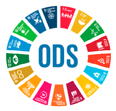

SOSTENIBILIDAD
¿Qué es la sostenibilidad y qué papel juega en el sector tecnológico actual?
La sostenibilidad es la capacidad de satisfacer las necesidades actuales sin comprometer la capacidad de las futuras generaciones
¿Que dimensiones abarcan?
- AMBIENTAL : se centra en la conservación y regeneración de los ecosistemas. Va más allá de “no contaminar”. Busca un uso responsable, eficiente y renovable de los recursos naturales.
- SOCIAL : Aborda la calidad de vida, equidad y bienestar de la población. Considera que el desarrollo es sostenible cuando mejora las condiciones humanas sin generar desigualdades ni vulnerar derechos
- ECONOMICA: implica un modelo que genere crecimiento y prosperidad, pero sin degradar los recursos ni excluir a las personas.
¿Qué son los aspectos ASG y por qué deben interesar a una empresa tecnológica?
Los aspectos ASG, que significa Ambientales, sociales y gobernanza, respectivamente, es un conjunto de criterios que sirven para evaluar, no solo el desempeño económico de una empresa, sino también la manera en que se comporta frente al entorno, las personas y las normas éticas. En otras palabras, permiten saber si una organización actúa de forma responsable y sostenible.
- Ambiental (A): Evalua la relacion de la empresa con el medio ambiente
- Social (S): Analiza como la empresa trata a sus empleados, clientes, proveedores y su comunidad en general
- Gobernanza(G): Se enfoca en la estructura y practicas de gobiernos en la empresa
Para una empresa tecnológica, estos aspectos son especialmente relevantes. Hoy en día, los usuarios valoran mucho la privacidad, la ética y la sostenibilidad, y las compañías que integran criterios ASG suelen ganarse mayor confianza. Además, estos factores ayudan a anticipar riesgos, como vulneraciones de datos o problemas en la cadena de suministro, y facilitan el cumplimiento de normas cada vez más estrictas. A esto se suma que los inversores están prestando mucha atención al desempeño ASG, lo que significa que una buena gestión en estos ámbitos puede abrir puertas a nuevas oportunidades de financiación.
¿Qué marcos internacionales impulsan la sostenibilidad?
Existen varios marcos internacionales que impulsan y orientan la sostenibilidad a nivel global. Entre ellos, la Agenda 2030 y los Objetivos de Desarrollo Sostenible (ODS) son los más conocidos
Agenda 2030 para el Desarrollo Sostenible
Aprobada por la ONU en 2015, es un plan global para avanzar hacia un desarrollo más justo, próspero y respetuoso con el planeta. Establece 17 Objetivos de Desarrollo Sostenible (ODS) y 169 metas a alcanzar antes del año 2030. Su propósito central es abordar los grandes retos del mundo, como el cambio climático, la pobreza, la desigualdad, la educación, la biodiversidad o la paz.
Los 17 ODS son el corazón de la Agenda 2030. Abordan cuestiones como:
- Fin de la pobreza
- Igualdad de género
- Educación de calidad
- Trabajo decente
- Producción y consumo responsables
- Acción por el clima
- Innovacion e infraestructuras
- Alianzas globales
Aunque la Agenda 2030 y los ODS son los más visibles, hay otros marcos que impulsan la sostenibilidad:
ALGUNOS DE ELLOS SON ESTOS:
-
✅ Acuerdo de París (2015) Un pacto internacional para limitar el calentamiento global a menos de 2 °C y trabajar por alcanzar 1,5 °C. Guía las políticas climáticas de países y empresas
-
✅ Principios del Pacto Mundial de la ONU (UN Global Compact) Diez principios sobre derechos humanos, normas laborales, medio ambiente y anticorrupción que las empresas pueden adoptar voluntariamente.
-
✅ Objetivos de Desarrollo del Milenio (ODM) Precursores de los ODS (2000–2015). Aunque ya finalizaron, sentaron las bases de la Agenda 2030.
-
✅ Normas ISO relacionadas con sostenibilidad
- ISO 14001 (gestión ambiental)
- ISO 26000 (responsabilidad social)
- ISO 50001 (gestión energética)
- ✅ Principios de Inversión Responsable (PRI) Impulsados por la ONU, guían a los inversores a considerar criterios ambientales, sociales y de gobernanza (ASG) en sus decisiones.Son clave para vincular sostenibilidad con finanzas.
¿Qué tres ODS están más relacionados con la informática o el desarrollo de software?
-
El ODS 9, sobre industria, innovación e infraestructura, destaca la importancia de fortalecer infraestructuras resilientes y promover la innovación. El desarrollo de software permite optimizar procesos industriales, mejorar la eficiencia energética y crear infraestructuras inteligentes, contribuyendo así a la innovación tecnológica y al crecimiento sostenible.
-
El ODS 4, de educación de calidad, se apoya en la tecnología para ampliar el acceso al aprendizaje y personalizar la educación. Plataformas digitales y aplicaciones educativas permiten democratizar la formación, desarrollar competencias digitales y reducir brechas educativas, fortaleciendo la inclusión y la equidad.
-
El ODS 12, relativo a producción y consumo responsables, se vincula con el software al permitir una gestión más eficiente de recursos, la reducción de residuos y la implementación de modelos de economía circular. Además, el green software engineering ayuda a minimizar la huella ambiental de las soluciones tecnológicas.
Tabla con 3 ODS y su relacion con al tecnologia
| ODS | Descripcion | Relacion con la tecnologia |
|---|---|---|
| ODS 9 : Industria, innovacion e Infraestrutura | Fomenta infraestructuras resilientes, industrializacion sostenible y innovacion tecnologica | El desarrollo de Software optimiza procesos induatriales, mejora la eficiencia energeticas, crea infraestructuras inteligentes y facilita la innovacion mediante IA |
| ODS 4 : Educacion de Calidad | Garantiza educacion inclusiva, equitativa y e caliudad para todos | Plataformas de aprendizaje, aplicaciones educativas y software personalizado amplian el acceso a la eduacacion por ejemplo: La MOODLE que usamos los estudiantes del IES saladillo |
| ODS 12 : Produccion y consumo Responsable | Promueve modelos sostenibles de produccion y consumo, reduciendo el impacto medioambiental | El Software y las soluciones digitales permiten gestionar recursos eficientemente, monitorear el consumo y los residuos, aplicar economia circular y desarrollar green software para minimizar la huella ecologica |
